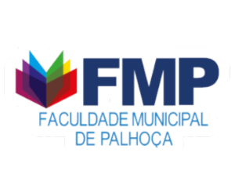

Cursos da FMP
• Administração
• Pedagogia
• Análise e Desenvolvimento de Sistemas
• Processos Gerenciais
Além dos cursos, a FMP também tem programas de inclusão social, também realiza eventos em épocas festivas totalmente aberto ao público gratuitamente.
Você também pode fazer parte desta instituição, fique de olho nas inscrições para o vestibular da FMP aqui.